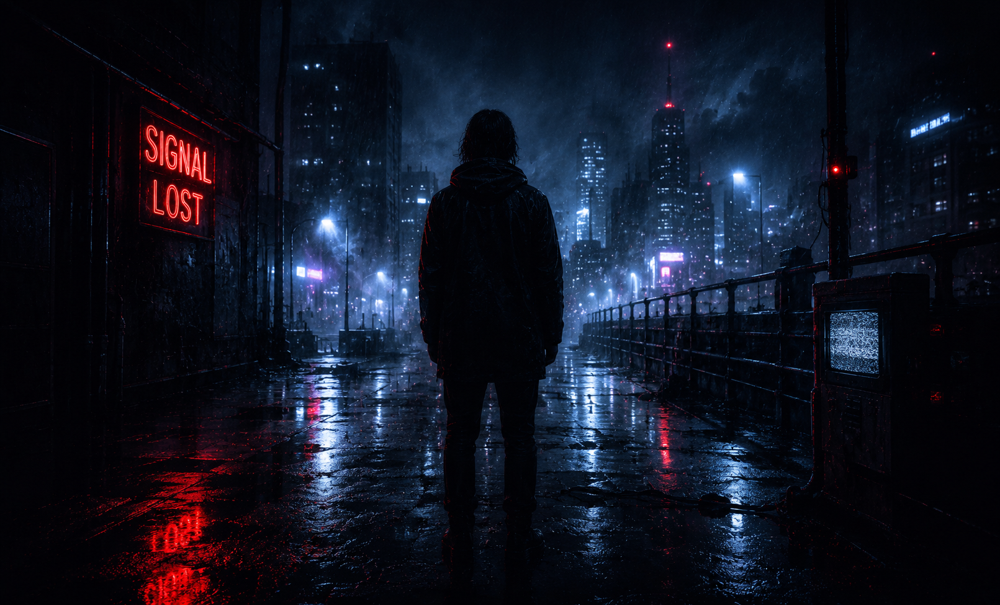

Independent stories
OTHER WORLDS

Fragments outside the main transmission.
Single transmissions from the Selvoren universe — dark, cinematic and emotionally distant.
SIGNALS
6 standalone transmissions.
No fixed sequence — each one stands alone.
UNIT 17 — BROADCAST · SIGNAL: LOST · STATUS: NULL · MODE: MONITOR_ACTIVE ·
UNIT 17 — BROADCAST · SIGNAL: LOST · STATUS: NULL · MODE: MONITOR_ACTIVE ·
UNIT 17 — BROADCAST · SIGNAL: LOST · STATUS: NULL · MODE: MONITOR_ACTIVE ·
UNIT 17 — BROADCAST · SIGNAL: LOST · STATUS: NULL · MODE: MONITOR_ACTIVE ·
Not every story needs a world of its own to keep unfolding. Some just need a signal — and someone still listening.